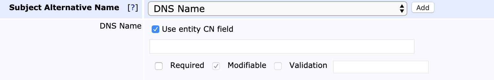

End Entity Profiles Fields
The following lists available End Entity Profile fields.
For more information on End Entity Profiles, see the End Entity Profiles Overview and for information about how to manage End Entity Profiles, see End Entity Profile Operations.
Username
The Username value represents an unique identifier for an end entity (user, server, device, etc). During the operation of adding an end entity username can be manually set or automatically generated. Selecting the Auto-generated checkbox in the end entity profile will generate unique values when end entities are added. The Username input field can be used to set a prefix for End Entity username.
Password
Passwords are used when a user (end entity) is requesting a certificate and/or when generating a keystore. Usually this is required, and no default value is configured. When the password is only used during the request procedure, this is called an Enrollment Code in the public web, since the password is only valid once and not used to protect the keys. Note that there is no difference between an Enrollment Code and a Password other than the name.
You can use auto-generation of passwords with email notification to send the user a generated password together with information on how to fetch the certificate.
You can also specify the minimum bit-strength a password is allowed to have in order to make policy compliance easier. The strength of a password is calculated as
floor(( the number characters in the password )*log2( number of allowed password characters ))
For non-generated passwords the number of allowed password characters is estimated to 72.
Example usage:
Password: "foobar123" (9 characters)
Allowed characters: a-z, A-Z, 0-9, 22 additional printable characters (72 in total)
Password strength / char: log2(72) = 6.17
Password strength: floor(6.17 * 9) = floor(55.53) = 55 bitsSetting this value to 55 will require the RA admin to set a 9 character password or longer.
Profile Description
Use the Profile Description field to give the End Entity Profile a freeform description. The description you specify will be displayed in the RA Web Make New Request page (Enroll > Make New Request) next to the chosen Certificate Type.
Subject DN Fields
For information about Subject Distinguished Names in general, naming rules and examples, see Subject Distinguished Names.
Subject DN fields define which DN components should be present for an end entity. If the System Configuration option Enable End Entity Profile Limitations is enabled, this restricts the values that can be used when adding or editing an end entity using all interfaces, be it web GUI, web service, CMP or something else. If you define values as required and non-modifiable, you can specify one or more values. If you specify multiple values separated by ';', the admin in the Web GUI will get a drop-down list menu to select from.
EJBCA does not by default restrict the lengths of DN fields. Some organizations don't, for various reasons, want to follow the limits defined in RFC5280 Appendix A.1 (Upper Bounds).
You can configure length limits by using regexp validation as described below, with a length limit. An example length limit allowing all characters, but maximum length 10 characters could be "^.{1,10}$".
In the Validation field you may restrict the allowed input, using a regular expression (regex). EJBCA uses Java Pattern syntax, which is similar to the Perl regex syntax. Matching is case sensitive by default, but this can be changed by adding (?i) in front of the regex. Here are some examples:
[0-9]+ allows digits only, and no wildcard
[0-9A-Za-z]+ allows digits, English letters only, no spaces, and no wildcard
[0-9A-Za-z ]+ allows digits, English letters only, spaces, and no wildcard
.+@.+ allows strings containing "@", for example e-mail addresses
[a-zA-Z0-9+._-]+@[a-zA-Z0-9.-]+ allows e-mail addresses with English characters only
[a-zA-Z0-9+._-]+@yourdomain\.com allows only e-mails from a specific domain
[a-zA-Z0-9._-]+\.yourdomain\.com allows only subdomains of yourdomain.com (but not yourdomain.com itself) or wildcard (*)
([a-zA-Z0-9._-]+\.)?yourdomain\.com allows yourdomain.com with or without a subdomain, and no wildcard (*)
An example regexp to validate domain names is:
^(\*.)?(((?!-))(xn--)?[a-z0-9-]{0,61}[a-z0-9]{1,1}\.)*(xn--)?([a-z0-9\-]{1,61}|[a-z0-9-]{1,30}\.[a-z]{2,})$
When having several fields of a certain type with mixed required and not required fields, some special handling might be needed when adding users via the Web Service API. For example, if you have:
The first OU field is required (Bar1) and not modifiable.
The next 3 OU fields are modifiable only (not required).
The last OU is required (Bar1) and not modifiable.
Then, if adding an end entity with DN "CN=Foo,OU=Bar1,OU=Bar2" will result in an error like the following:
org.ejbca.core.model.ra.raadmin.EndEntityProfileValidationException: Subject DN field 'ORGANIZATIONALUNIT' must exist. This is because EJBCA cannot keep track of which fields you mean to set, if it is one of the required or non-required. To help EJBCA determine this you can specify the non-required OU fields with empty values, "CN=Foo,OU=Bar1,OU=,OU=,OU=,OU=Bar2".
There is one particular subject DN field that deserves extra information, postalAddress.
PostalAddress is not encoded as a string, but is an ASN.1 sequence. If you only enter the value as a string it will be encoded as a simple UTF8String, which is invalid. You need to enter is as a hex encoded ASN.1 DirectoryString. This is done by hex encoding the ASN.1 object and pre-pending it with #, i.e. #30...
These characters are forbidden by default in the database: '\n', '\r', ';', '!', '\0', '%', '`', '?', '$', '~' and can not be used in the subject DN filed value.
The GUI have additional, client side restrictions using a regexp: /[^\u0041-\u005a\u0061-\u007a\u00a1-\ud7ff\ue000-\uffff_ 0-9@.\&*\,-:\/\?\'\=#()|]/g
Also note that it is configurable in cesecore.properties which characters are forbidden in the database.
Subject Alternative Names
Subject alternative names (altNames) are extra naming items that are not fit to have in the Distinguished Name, such as email, dns, ip address etc. There are a number of standard ones, and the possibility to define special ones, which many companies have done for altNames such as MS UPN, GUID, Krb5PrincipalName.
Subject alternative names can be: rfc822Name=<email>, dNSName=<host name>, uri=<http://host.com/>, ipaddress=<address>, upn=<MS UPN>, guid=<MS globally unique id>, directoryName=<LDAP escaped DN>, krb5principal=<Krb5 principal name>, permanentIdentifier=<Permanent Identifier values>, subjectIdentificationMethod=<Subject Identification Method values or parameters>
The text fields and options for Subject Alternative Names generally work in a similar way as the Subject DN fields.
RFC 822 Name (e-mail address)
Configuration of email fields can be complex since there are two places in the End Entity profile where email addresses can be configured:
Email field: Registers a user email in the EJBCA database (used for email notifications and so on).
Subject alternative name field: Adds an email address to the SubjectAlternativeName field in an issued certificate.
These two fields can be the same, but does not have to be, which is why configuration can be complex if you configure them individually.
For the Subject alternative name field there are different options:
Use entity e-mail field selected: Results in a single entry for End Entity E-mail when adding a new end entity.
Required: If selected, the End Entity E-mail field must be specified and cannot be omitted.
Use entity e-mail field cleared: Results in a separate input field for RFC 822 Name.
Required: If selected, the RFC 822 Name field must be specified and cannot be omitted.
Modifiable: If selected, the RA administrator can specify an email address.
If a domain (foo.com) is set in the profile, the RA administrator can specify the first part of the email, i.e. before @ (since the domain is pre-filled), but also the domain part can be modified.
If Modifiable is cleared, a full, fixed, email address must be provided in the profile, and all end entities will be registered with this email address (the profile can be configured with only domain part, but filling an email address by the RA administrator later will not work).
DNS Name
A domain name. If the Use entity CN field is selected, then the value from the Common Name attribute in Subject DN is also used for the DNS Name field.

IP address
An IP address can be either an IPv4 address or an IPv6 address.
Example IPv4: 192.168.2.54
Example IPv6: 2001:DB8:85A3:0:0:8A2E:370:7334
Krb5 Principal Name
The Krb5 principal name is in the format "principal1/principal2@realm" and should be entered as such in the field.
For example user@PRIMEKEY.COM for a normal user in the realm PRIMEKEY.COM or krbtgt/PRIMEKEY.COM@PRIMEKEY.COM for a KDC.
Permanent Identifier (RFC 4043)
The Permanent Identifier is of the form "identifierValue/assigner" where identifierValue is an optional string and assigner is an optional OID and should be entered as such in the field. If the identifierValue string contains a '/' (slash) character, it should be escaped with a back slash ("\/").
Examples:
abc0123/1.2.3.4abc0123//1.2.3.4/Subject Identification Method (RFC 4683)
The SIM (Subject Identification Method) value is stored in the form "HashAlgorithmOid::HashedAuthorityRandom::PEPSI" where PEPSI (Privacy-Enhanced Protected Subject Information) is built by the two times hashed concatenation of the user chosen password, the authority random value, the SSI type and the SSI itself. This value is calculated after adding or editing an end entity. Therefore the SIM needs to be entered as its parameters of the form 'HashAlgorithmOid::UserChosenPassword::SSIType::SSI', where the SSIType is the type of SSI (Sensitive Identification Information).
Examples for input parameters with SHA-256 hash algorithm and calculated SIM (is done after saving an end entity with SIM parameters):
2.16.840.1.101.3.4.2.1::MoreThan8Chars::DriversLicenseId::ABC1234567-> is processed to 2.16.840.1.101.3.4.2.1::CB3AE7FBFFFD9C85A3FB234E51FFFD2190B1F8F161C0A2873B998EFAC067B03A::6D9E6264DDBD0FC997B9B40524247C8BC319D02A583F4B499DD3ECAF06C786DFFederal Agency Smart Credential Number (FASC-N)
FASC-N is an OtherName defined for PIV certificates in FIPS 201-2. It is encoded as an Octet String and therefore the altName in EJBCA is entered as Hex encoded octets. A subjectAltName string could for example look like:
rfc822Name=email@example.com, fascN=0419d23210d8210c2c1a843085a16858300842108608823210c3e1Since the field is limited to 25 bytes, a suggested validation regex would be [0-9a-f]{1,50}.
XmppAddr and Service Name
XMPP services require two certificate types, XMPP Server, and XMPP Client certificates. The XMPP Client certificate requires the following Subject Alternative Names (OtherNames in RFC5280):
Service Name (RFC4985)
XMPP Address (RFC6120)
These altNames can be entered using the GUI or the CLI, and you can use them individually or together. A subjectAltName string could, for example, look like:
xmppAddr=john.doe@ejbca.org, srvName=_Service.NameCertificate Validity
By setting the Certificate Validity Start Time and End Time you can precisely specify, for a specific end entity, when the certificate will start being valid and when the certificate will cease being valid.
When selecting to use Certificate Validity Start or End time you will get the possibility to enter these fields when a new end entity is added. You can also specify a default value for the end entity profile. Different formats of specifying the validity time is provided as examples in the end entity profile page.
This function requires the 'Allow validity override' function in the Certificate Profile.
Revocation Reason to set After Certificate Issuance
Using this option you can define that when adding a new user, the revocation state of an issued certificate can be set immediately to something else than 'Active'.
Useful if you want to issue certificate that are 'On hold' for users. After the user receives the certificate they might be required to perform some action in order to have their certificate activated.
Most useful when used in combination with OCSP since it will require, in practice, instant revocation checking.
When enabling this option in the profile, a corresponding selection will be available when adding new users. The user data corresponding to this option is an ExtendedInformation attribute, ExtendedInformation.CUSTOM_REVOCATIONREASON.
Reverse Subject DN Alt Name Checks
This checkbox is not recommended to be used in normal operations. When using the External RA and more than one DN field type is set in the profile, for example one optional OU and one required OU, it might be needed to check this checkbox for the profile validation to work.
Only use it in such a special case if nothing else work. This option may be removed in the future.
Allow merge DN Webservices
If the end entity profile information must be used to define default values when you create a user, the flag Allow merge DN Webservices must be selected in the end entity profile. When this option is enabled, and Web Service API is used to edit an End Entity, the DN passed in with WS will be merged with default values from the End Entity Profile. For example, if the End Entity Profile have default Values for O=PrimeKey and C=SE, and the WS editUser call sets user DN to CN=Donald Duck, the DN of the End Entity added to EJBCA will be CN=Donald Duck,O=PrimeKey,C=SE.
This is a complex feature, so there will be some limitations. The feature handles multiple fields of certain type, for example OU, and you should limit the usage to best practice fields, i.e. use a CN, never use DN Email (as you should not in any case), etc. Verify behavior before usage. Some typical use cases:
End Entity profile with default value: OU=OrgUnit, add end entity (with WS) with subject DN CN=Username,O=Org,C=SE → resulting end entity DN is CN=Username,OU=OrgUnit,O=Org,C=SE
End Entity profile with default value: OU=OrgUnit,OU=OrgUnit2, add end entity (with WS) with subject DN CN=Username,O=Org,C=SE → resulting end entity DN is CN=Username,OU=OrgUnit,OU=OrgUnit2,O=Org,C=SE
End Entity profile with default value: OU=OrgUnit,O=Org,2,C=SE add end entity (with WS) with subject DN CN=Username → resulting end entity DN is CN=Username,OU=OrgUnit,O=Org,C=SE
Also see Configuring Web Services Behavior.
Allow multi-value RDNs
This setting enables usage of multi-value RDNs as described in the Subject Distinguished Names section.
Using multi-value RDNs can complicate your PKI usage and should be avoided if possible. Only enable this option if you are certain that you really need it.
Maximum Number of Failed Login Attempts
By choosing a maximum number of failed login attempts the status of a user will change to GENERATED in case a wrong password is entered more than the specified number of times. Note that what is called a "password" in the admin web is often called an "enrollment code" in the public web. The Use option must be selected for the end entities to use this feature. If Modifiable is selected, the specified number can be changed for a particular end entity at the creation time of the end entity or later by editing it.
Custom Certificate Extension Data
By checking Use for custom certificate extension data in the end entity profile, a text area is provided when adding or editing an end entity for supplying custom certificate extension data.
Extension data is entered in the text area in the same format as for Java properties files, that is typically, key=value with one entry on each line. The extension data accepted and/or required depends on the custom extensions chosen in the certificate profile as 'Used Custom Certificate Extensions' and how these are configured.
For example, custom extensions of type BasicCertificateExtension configured with the property dynamic=true accept custom extension data in the form 'OID.value=value' where OID is the OID of the configured extension and value is the value to put in the extension in the configured encoding.
1.2.3.4.value = 65486c6c206f6f776c7200641.5.6.value = Hello worldFor more information on available extensions and configuration, see Custom Certificate Extensions.
The following displays an example configuration of a certificate extension taking dynamic value in RAW hax encoded format:
OID: 1.2.3.4Display Name: SingleExtensionClass Path: org.cesecore.certificates.certificate.certextensions.BasicCertificateExtensionCritical: falseProperties: dynamic=true encoding=RAWIf the request (Extension Data) contains extensions which cannot match any configured Custom Certificate Extension in EJBCA, issuance will be rejected.
ETSI PSD2 QC Statement
If PSD2 QC Statements are used, selecting the ETSI PSD2 QC Statement option allows creation of end entities containing PSD2 qualified certificate statement. In addition, this setting will allow input of NCAName, NCAId, and TPP Roles.
For more information, see PSD2 Qualified Certificate Statement in Certificate Profile Fields.
CA/B Forum Organization Identifier
The CA/B Forum Organization Identifier must also be enabled in the certificate profile, for the field to show up in issued certificates. In the end entity profile, selecting this field enables input of the data as specified in the CA/B Forum Guidelines For The Issuance And Management Of Extended Validation Certificates, section 9.8.2. It will end up as a certificate extension
id-CABFOrganizationIdentifier OBJECT IDENTIFIER ::= { joint-iso-itu-t(2) international-organizations(23) ca-browser-forum(140) certificate-extensions(3) cabf-organization-identifier(1) }ext-CABFOrganizationIdentifier EXTENSION ::= { SYNTAX CABFOrganizationIdentifier IDENTIFIED BY id-CABFOrganizationIdentifier }CABFOrganizationIdentifier ::= SEQUENCE { registrationSchemeIdentifier PrintableString (SIZE(3)), registrationCountry PrintableString (SIZE(2)), registrationStateOrProvince [0] IMPLICIT PrintableString OPTIONAL (SIZE(0..128)), registrationReference UTF8String}Examples:
NTRGB-12345678 (NTR scheme, Great Britain, Unique Identifier at Country level is 12345678)
NTRUS+CA-12345678 (NTR Scheme, United States - California, Unique identifier at State level is 12345678)
VATDE-123456789 (VAT Scheme, Germany, Unique Identifier at Country Level is 12345678)
PSDBE-NBB-1234.567.890 (PSD Scheme, Belgium, NCA's identifier is NBB, Subject Unique Identifier assigned by the NCA is 1234.567.890)
Number of Allowed Requests
By selecting Use for number of allowed requests you enable the possibility to request several certificates in a row, without the user status being set to generated. Normally after a username/password pair has been used to generate a certificate, the users status is set from 'new' to 'generated'. This makes the password invalid, thus implementing a one-time password scheme. By selecting a number higher than one for 'number of allowed requests' the user can request several certificates before the status is set to 'generated'. This makes it possible to enroll for several certificates directly, for example one authentication and one signature certificate.
The 'number of allowed requests' in the End Entity Profile will set the default, and maximum value available when adding or editing a new end entity. When editing an existing end entity and setting the status to new, from a non-new status, the 'number of allowed requests' will automatically be altered to the default value for the profile. If the end entity profile used no longer uses the 'number of allowed requests' the request counter for the end entity will be removed when the end entity is edited.
Plugin Field Restrictions
Administrators can develop further custom user field restrictions using the FieldValidator as described in Modifying EJBCA.